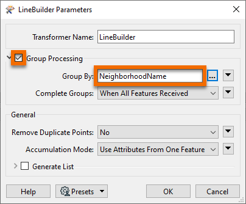

Learning Objectives
After completing this unit, you'll be able to:
- Create a polygon feature using the LineBuilder transformer.
- Create multiple polygons when an attribute value changes.
Video
Resources
Introduction
You can also use the LineBuilder to create polygons from points.
Exercise
- Open FME Workbench 2022.0 or later.
- Click Blank Workspace to start a new workspace.
- Click Readers > Add Reader and set Format to CSV (Comma-Separated Value).
- Click the ellipsis button [...] and select the Neighborhoods.csv file.
- Set the Coord. System to LL84.
- You can decide how to generate points using the methods covered earlier in the module: reader parameters or a VertexCreator.
- Add a LineBuilder transformer to the canvas connecting it to either the CSV reader or the VertexCreator, depending on the method you chose to get the points.
- In the LineBuilder parameters, set Group Processing > Group By to NeighbourhoodName. If the last point is the same as the first, then a polygon is automatically created. In FME 2018 or older, the Group By option is not available. Use the Connection Break Attribute instead.
- Run the workspace and inspect the results.
Results

The output of polygons using any of the three methods and a LineBuilder transformer. Stylized in FME Data Inspector using map tiles by Stamen Design, under CC-BY-3.0. Data by OpenStreetMap, under CC-BY-SA.